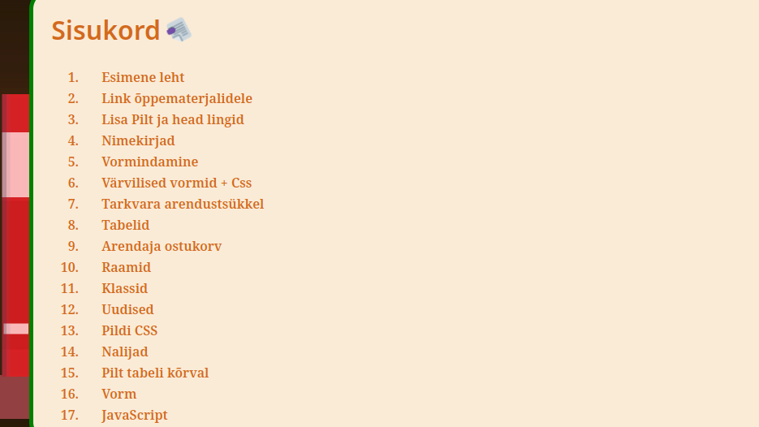

esc2pipe
Selle Fish pluginaga on võimalik kasutajal sisestada | sümbol käskude jaoks terminalis.
IMS - (Inventory Managment System)
Seda veebilehte arendasin Jeld-Wen Eesti AS-ile, et printeri kasettidest oleks ülevaade.
Bash Toolbox
See on minu skript linux desktopile, et lihtsustada arvuti sätestust ja kasutust. Selle skripti abil
saan faile liigutada, pakendeid paigaldada jne.
Efe Toolbox
See oli üks minu olulisemaid PowerShell projekte, mille ma lõin pärast esimese kursuse läbimist
suvevaheajal.

Shutdown script
See oli minu esimene katse luua graafilise liideega skript PowerShell Form abil.
Tegin selle skripti nalja pärast, et teisi klassikaaslasi ehmatada.

School Sample
See oli minu näide õpetajale, et tulevikus ei võtaks tal nii kaua aega näidete toomisega. Lisaks
sellele on see hea põhi mille abil graafiline skript luua powershellis.

Markdown homework
See oli minu kodutöö, mille otsustasin koostada Markdowni märgistuskeeles. Tegin seda
sellepärast, et koodi kirjutamine MS Wordis oli kole ja aeglane.

Simple batch file converter
See oli minu esimene katse luua Pythoni programm, mille ma tegin pärast esimese kursuse läbimist
vaheajal. Sellega on võimalik teisendada massiliselt failiformaate.

Veebitehnoloogiate õppimine
See oli kooli tunnis õpitud HTML, mida ma nüüdseks olen hakanud iseseisvalt edasi arendama.
Lisaks põhialuste omandamisele olen uurinud ka CSS-i ja JavaScripti, et muuta oma veebilehed
interaktiivsemaks ja visuaalselt atraktiivsemaks.

Cube
Esimese poole esimesest tunnist tegin 3D mudeli navigatsioonikuubikust. Algul arvasin, et
kaamera/vaate liigutamine selles keskkonnas võib olla keeruline, kuna see oli mulle võõras.
Üllatusin, et see osutus oodatust lihtsamaks.

Lego 2x4 punane klots
Teise poole esimeses tunnis valmistasin 3D mudeli Lego 2x4 punasest klotsist ning õppisin
kasutama Tinkercad keskkonda.

Taburett
Kolmandas tunnis modelleerisin tabureti, kasutades selleks Sketchup keskkonda. Märkasin, et
Sketchupis on modelleerimine veidi keerulisem kui Tinkercadis, eriti ringi liikumise osas.

Pink
Teise poole kolmandast tunnist tegin lisaülesandena modernse pingi. Selles töös tundsin, et sain
töö tehtud täiuslikult.

Loss
Neljandas tunnis hakkasin tegema lossi, millel olid värav, seinad, kaitsekraav ja vibutorn.
Tundsin, et selle lossi tegemine oleks olnud ilma näidiseta raske, kuid sain hakkama.

Lumehelbed
Viiendas tunnis tegin 4 erinevat lumehelvest komponentse tööriista abiga. Alguses ei saanud ma
aru, kuidas joondada lumehelbeid korralikult, kuid peale katsetamist taipasin, kuidas neid teha
kiirelt ja efektiivselt.

Maja
Kuuendast kuni kaheksanda tunnini tegin valmis ühekorruselise maja. Selles töö oli limiteeriv
faktor veebikesskkond, kuna see jäi väga aeglaeks peale moobli liamit Sketchup mudeli poest.

Renault FT-17
Viimaseks 3D modeleerimise tunniks tegin selle Renault FT-17 tangi. Tanki tegin 2 nädalavahetust
Blender programmi abil, kuna see oli tasuta litsensiga ja laialdaselt kausutuses. Töö tegemiseks
õppisin
programmi iseseisvalt ja lõpuks olin Blender programmiga suht pädev.

 IT noorem spetsialist
IT noorem spetsialist


{kind=link}
{kind=link}